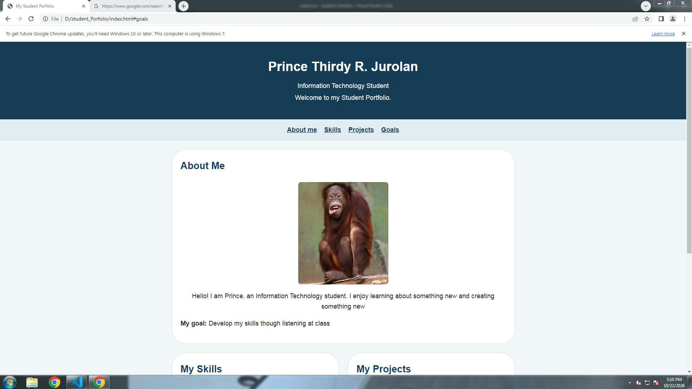

Problem-Solving
Thinking through challenges and looking for workable solutions.
FIRST-YEAR BSIT STUDENT
I'm Prince Thirdy R. Jurolan, an Information Technology student interested in computers, programming, and discovering how technology works.
BSIT · 1C · 1st Year
ABOUT
I'm a first-year Bachelor of Science in Information Technology student who enjoys exploring computers and learning about the tools behind the digital world.
I spend my time discovering new things about Information Technology, learning programming and coding, and exploring how technology can be used to solve problems. I also enjoy gaming, anime, movies, music, sports, running, and chess.
SKILLS
These are the skills I currently use and continue to develop as an IT student.
Identifying basic computer issues and exploring ways to resolve them.
Thinking through challenges and looking for workable solutions.
Working with others and contributing to shared tasks.
Staying open to new ideas, tools, and experiences.
Technology · Gaming · Coding · Anime & Movies · Music · Sports · Chess
PROJECTS
A space for school outputs, practice work, and things I've learned along the way.
Replace this text with a short description of the project, its purpose, and what you learned from completing it.
Tools / technologies: Add here
Replace this text with a short description of the project, its purpose, and what you learned from completing it.
Tools / technologies: Add hereCONTACT
For questions, school-related conversations, or opportunities to connect, feel free to reach out.